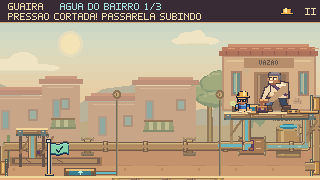
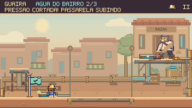
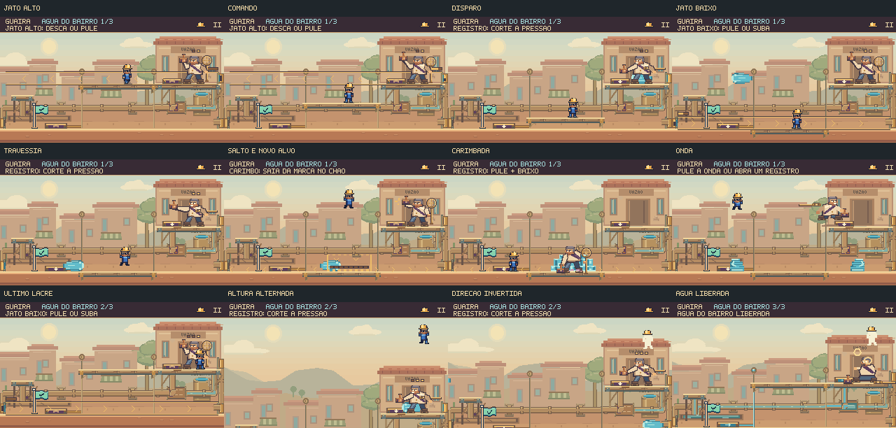

Próxima revisão: acabamento do cenário, mecanismos e animações →
Ler o jato.
Cortar a pressão.
O prefeito agora comanda descargas em duas alturas, muda a ordem dos ataques e inverte a direção da água no último lacre. Feka pode enfrentar a sequência inteira ou interrompê-la com uma sentada no registro.
Um contra-ataque que muda a luta
Depois do disparo, o registro vira uma oportunidade. Uma nova sentada em qualquer um dos dois controles desvia a água, cancela os próximos jatos e as carimbadas daquele ciclo. A plataforma sobe e abre as costas do chefe. A descarga da emenda também fica desarmada nessa abertura.
No vídeo, a primeira interrupção vem pelo balcão. Na última etapa, Feka desce, salta o jato baixo e alcança o registro inferior. O primeiro lacre continua ensinando o ciclo de carimbada, registro, plataforma e golpe por cima.
Comandos reais do jogo, sem reposicionar personagens ou alterar vida. Simulação e captura a 60 fps; vídeos sem áudio. São percursos ensaiados, não sessões de descoberta com jogadores novos.
Ou enfrentar a sequência completa
Cada disparo anuncia sua altura e direção. O contorno âmbar é o aviso; os volumes sólidos de água são o perigo. Se Feka não corta a pressão, o chefe continua com as carimbadas direcionadas e as ondas do piso.
| Etapa | Combinação | Decisão |
|---|---|---|
| Primeiro lacre | Uma carimbada com alvo fixo. | Sair da marca, abrir o acesso e aprender o golpe por cima. |
| Segundo lacre | Jato alto da direita; jato baixo da esquerda; carimbada e ondas. | Mudar de altura, saltar a água ou interromper após o primeiro disparo. |
| Último lacre | Baixo da esquerda → alto da direita → baixo da direita. Depois, duas carimbadas. | Ler a inversão de direção e o ritmo mais rápido, ou arriscar uma interrupção antecipada. |
Os dois registros têm papel no combate


Água, gestos e encaixes revisados
O prefeito arma a chave, aponta o carimbo e se firma no disparo. Os bocais se conectam à tubulação e indicam a origem do jato. A água ganhou uma frente curva, uma cauda mais estreita e reflexos em movimento; desenho e colisão compartilham esse contorno.

Outro percurso: permanecer no balcão e saltar a emenda
Alternativa: esperar a descarga da emenda terminar
Comparar com a rodada anterior
Captura da revisão anterior, com seu código e percurso preservados. As duas versões usam a mesma física e o mesmo personagem.
Conferido na integração nativa
Quatro percursos completos sem dano, incluindo duas interrupções pelos controles reais. A revisão cobre salto cedo e tarde, água com colisão correspondente, derrota, nova tentativa, pausa, movimento reduzido, teclado e toque simulado.
O chefe usa a mesma classe dentro do capítulo e na entrada direta. As oito cenas foram percorridas no navegador, com a progressão das cinco etapas principais registrada normalmente.
A descoberta das estratégias e o equilíbrio da dificuldade ainda precisam de playtest com pessoas. Toque foi exercitado por eventos no navegador; não houve teste em aparelho físico.
Resultados e hashes · Critérios e reprodução · Percursos nativos · Integração do capítulo · Controles e página